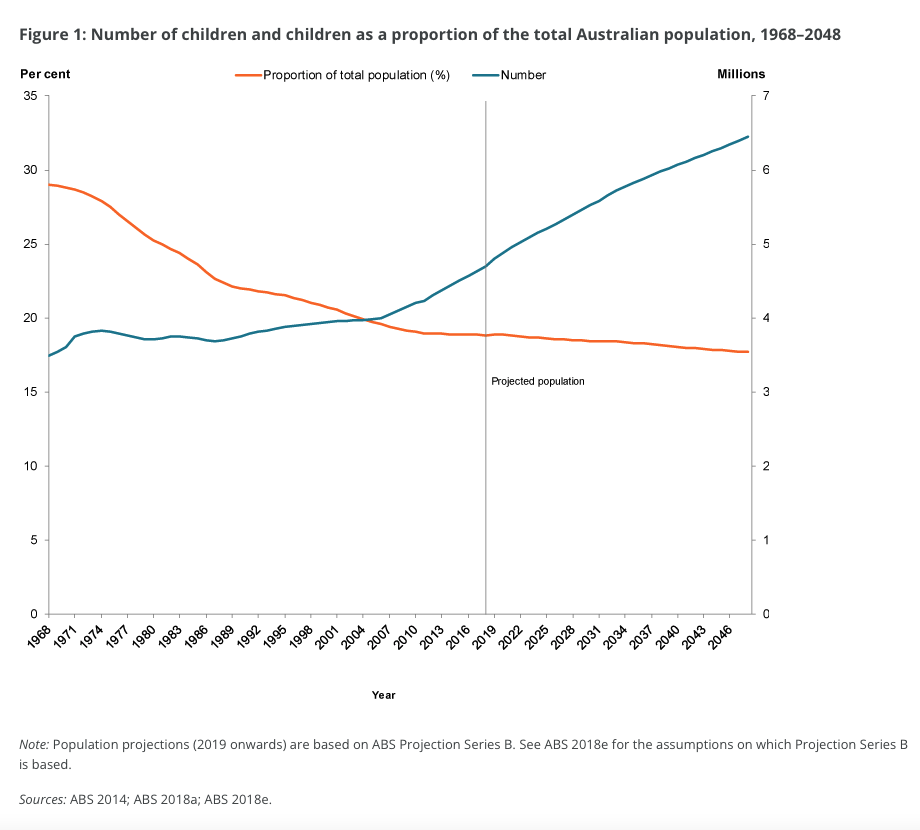

Project Idea
Tooth brushing reward timer
Overview
I propose development of a tooth brushing app targeted to small and school age children to encourage regular and long term tooth brushing habits preventing tooth decay and long term health issues. To develop this app tools such as Swift and development of coding skills will be required.
Motivation
As a parent of small children, I know how hard it is to motivate them to do menial tasks where there is no obvious and instantaneous reward. Brushing their teeth is one of those tasks. As a society diet has changed and with that there has been a noted increase in dental decay in young children. (2005, Australian Institute of Health Welfare) I believe that with an app that is easily accessible children will be a fantastic tool to promote teach and strengthen healthy tooth brushing habits by making it something that is fun. Ultimately, we want to teach children healthy oral hygiene so they can keep those pearly whites for life.
By 2022 it is projected that 25% of the Australian population will be aged 0-14 years see figure 1. (2020 Australian Institute of Health and Walfare.)

This means that a quarter of the population is requiring more intensive use of public dental services with their ever-increasing percentages of decay in children. Symptoms such as toothache, abscess, and in the long-term tooth loss will cause not only long-term trauma for small children when tooth removal is the only option it will also cause a long term to drain of public dental health services as those children reached adolescence and beyond. If we can bypass the issue through promotion of strong and healthy oral hygiene practices in children, the ultimate saving for the public health sector and the long-term health of the Australian population can only be seen as positive.
Description
The App would encourage children to develop healthy tooth brushing habits as soon as their first teeth erupt giving them the basis of good oral hygiene to last their lifetime. The app would be programmed to provide a 2-minute timer with a countdown incorporating fun music and a reward sticker on completion. As toothbrushing should be an everyday event a calendar function to display their daily reward stickers will encourage their developing habits.
Music can be played natively from the app pr selected as a shuffle from the device using the app so that children are kept interactively motivated in the exercise of brushing their teeth.
A reminder system will also be integrated in the app with push notification reminding children to brush and floss and can also remind them of their next appointment with the dentist.
As a long-term update there could be videos integrated within the app that demonstrated ideal brushing and flossing technique and information for parents for what to watch out for should something go wrong with their child’s dental health.
There is a gap in the market for simple tools that target healthy teeth brushing habits in children. Tooth brushing apps available now are mostly targeted to teens and adults which are not motivating or encouraging for small children and their first teeth.
Tools and Technologies
Development environments
- Computer supporting app development for target platforms (Mac is common to Apple and Android)
- Development tools (such as compilers) and Integrated Development Environments for the target platforms, such as Xcode and Android Studio
Hardware for target platforms to test app use and performance on
- Apple iPhones and iPads of varying models (if available)
- Android phones of varying models (if available)
Collaboration tools between developers
- Git repository to maintain and version source code and enable multiple developers to write the source code if required.
- Communication tools for collaboration between team members, especially if working remotely, such as Microsoft Teams.
Skills Required
Development skills in Swift for IOS app development and in C/C++ or Java for Android App development. For the purposes of this project, I would be suggesting developing exclusively for Apple devices as that is in keeping with the tech environment that I have access to.
User interface design skills will need to be developed and coding skills further explored. Also, a peer review of the software design would facilitate the development of the prospective app.
Project management skills would be highly necessary to keep the design and implementation of the app on track.
What potential obstacles or drawbacks can you anticipate
There are other timers available…why not just use the egg timer the dentist gives you? Children like reward. An app that has interesting sounds that help count down the time and immersive imagery as they are completing their tooth burnishing experience would be more stimulating and fun and therefore make a tedious task more enjoyable. Get those dopamine receptors working.
Other potential drawbacks in creating the App would be that I lack the skills presently to code and graphically design the app. The tools available through apple are accessible and therefore I would ultimately be able to create a working product after increasing my skills throughout my time in this degree.
I would require a test user environment to examine the efficacy of the app and give feedback for further future development.
Outcome
Upon successful development it is possible that the long-term issues of decay in small children may be mitigated by easy encouragement of proper dental hygiene. I believe that should this app be developed and teste it will decrease the incidence of dental decay and reduce strain of the dental health system.